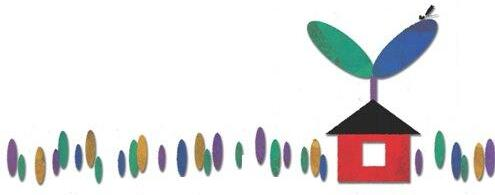

社会福祉法人つくりっこの家
つくりっこの家は“障害”の有無・年齢をこえて人と人とが出会い ふれあう場所です。そしてそれぞれが持ち味を生かし合い 分かち合い、支え合う関係をつくっていこうとしています。
つくりっこの家には、心の病を抱える人、体に障害のある人、 そして彼らと共に働きたいと思う人々が集まって さまざまな仕事に取り組んでいます。
つくりっこの家は“障害”の有無・年齢をこえて人と人とが出会い ふれあう場所です。そしてそれぞれが持ち味を生かし合い 分かち合い、支え合う関係をつくっていこうとしています。
つくりっこの家には、心の病を抱える人、体に障害のある人、 そして彼らと共に働きたいと思う人々が集まって さまざまな仕事に取り組んでいます。

つくりっこの家では障害(主に精神障害)のあるＡメンバーと、 地域に住む主婦たちを中心としたＣメンバー(障害のまだない人)が組んで、 それぞれが持ち味を生かしながら働いています。
上図の真ん中にあるクラブハウスを拠点に、 自転車や徒歩で行ける範囲にいくつかのお店を経営しています。
つくりっこの家は、1978年にこの地域の人たちの手づくりで始まりました。 当初の14年間は行政の助成を受けずに運営を続けてきましたが、 1992年に東京都と練馬区から補助を受け 精神障碍者作業所つくりっこの家クラブハウスが誕生しました。
そして、2004年10月に法人として認可され社会福祉法人つくりっこの家を 設立しましたが、活動当初の❝自前の精神❞は大事にしようと、 リサイクルショップなどは現在でも任意団体として自主運営をしています。
つくりっこの家の活動の前身となったグループ「ぜろの会」は、 困難を抱えている人たちとどのように生きあっていったらよいか模索する中で、 「ともに生き、ともに働く」関係を目指してきました。 「～のために」ではなく、「～とともに」という姿勢は、 現在でもつくりっこの家の活動を支える大切な考え方です。